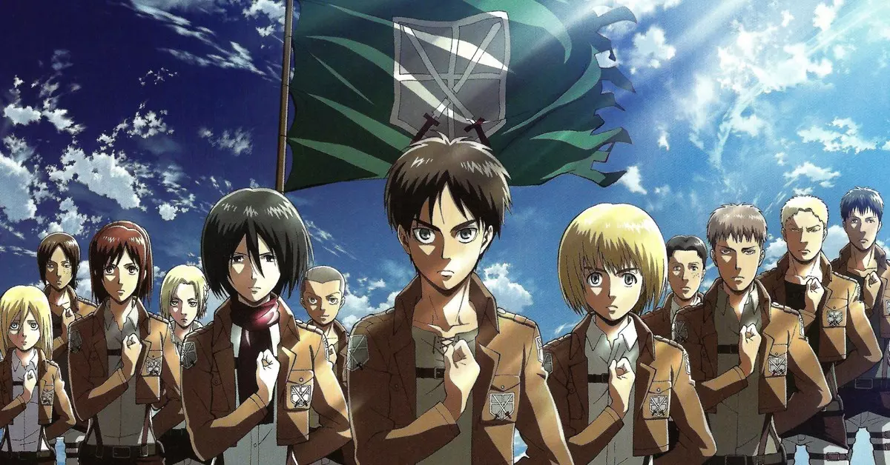

Relançamento do icônico The Elder Scrolls V: Skyrim
Preparem-se, aventureiros! O icônico e lendário Skyrim está prestes a retornar para a nova geração de PCs... Veja mais.

Em Histórico Avanço Acadêmico, "Shingeki no Kyojin" é Adotado como Matéria Obrigatória em Cursos de Doutorado! Especialistas Celebram a Inovação Acadêmica
Uma mudança revolucionária está ocorrendo no cenário acadêmico, trazendo consigo uma fusão única entre a cultura pop e os estudos acadêmicos. "Shingeki no Kyojin"... Veja mais.
Emoção e Novidades: Novo Filme do Pantera Negra se Passará no Brasil e Contará com Participação Especial do Professor do Instituto PROA! Wakanda Para Sempre!
Preparem-se para uma aventura épica que vai além das fronteiras de Wakanda! O tão aguardado novo filme do Pantera Negra foi oficialmente anunciado, e desta vez, o cenário se desloca para... Veja mais.